Wush Wu
- Taiwan R User Group 共同創辦人
- 以下R 套件的貢獻者:
- FeatureHashing
- digest
- rcppcnpy
- knitr
- 臺大電機所博士生

Wush Wu

出處：http://en.wikipedia.org/wiki/File:Data_visualization_process_v1.png
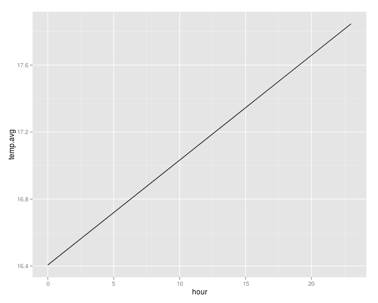
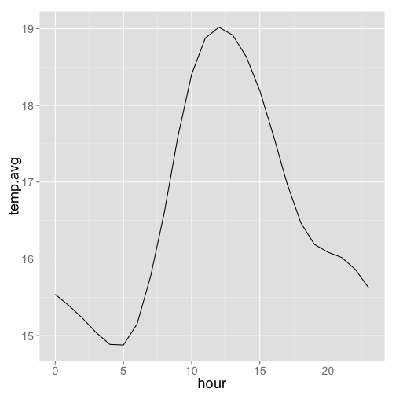
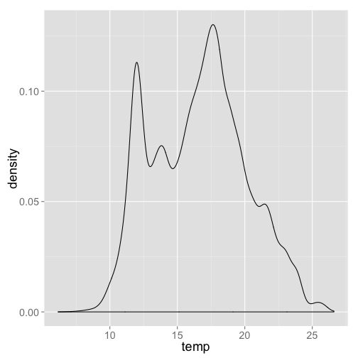
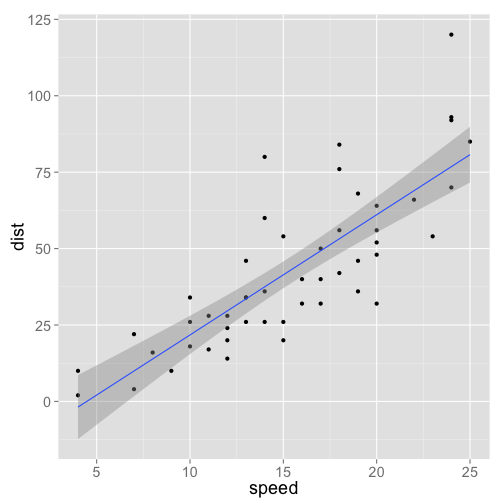
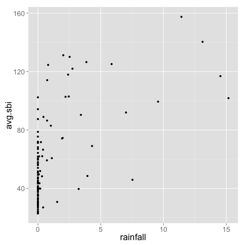
出處：https://www.kaggle.com/c/march-machine-learning-mania-2015

| date | hour | sarea | sna | lat | lng |
|---|---|---|---|---|---|
| 2014-12-08 | 15 | 信義區 | 捷運市政府站(3號出口) | 25.04 | 121.57 |
| 2014-12-08 | 15 | 大安區 | 捷運國父紀念館站(2號出口) | 25.04 | 121.56 |
| 2014-12-08 | 15 | 信義區 | 台北市政府 | 25.04 | 121.57 |
| 2014-12-08 | 15 | 信義區 | 市民廣場 | 25.04 | 121.56 |
| 2014-12-08 | 15 | 信義區 | 興雅國中 | 25.04 | 121.57 |
| 2014-12-08 | 15 | 信義區 | 世貿二館 | 25.03 | 121.57 |

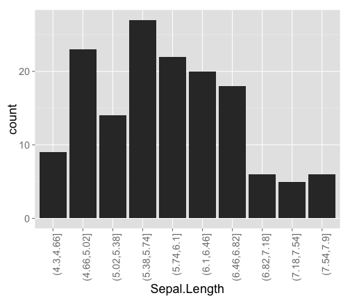
| 板橋區 | 4 | 南港區 | 13 | 萬華區 | 12 | 信義區 | 23 |
| 北投區 | 12 | 內湖區 | 15 | 文山區 | 12 | 永和區 | 10 |
| 大安區 | 30 | 三重區 | 16 | 汐止區 | 18 | 中和區 | 4 |
| 大同區 | 11 | 士林區 | 14 | 新店區 | 15 | 中山區 | 20 |
| 蘆洲區 | 7 | 松山區 | 15 | 新莊區 | 13 | 中正區 | 20 |
| 板橋區 | 4 | 南港區 | 13 | 萬華區 | 12 | 信義區 | 23 | 苓雅區 | 1 |
| 北投區 | 12 | 內湖區 | 15 | 文山區 | 12 | 永和區 | 10 | ||
| 大安區 | 30 | 三重區 | 16 | 汐止區 | 18 | 中和區 | 4 | ||
| 大同區 | 11 | 士林區 | 14 | 新店區 | 15 | 中山區 | 20 | ||
| 蘆洲區 | 7 | 松山區 | 15 | 新莊區 | 13 | 中正區 | 20 |
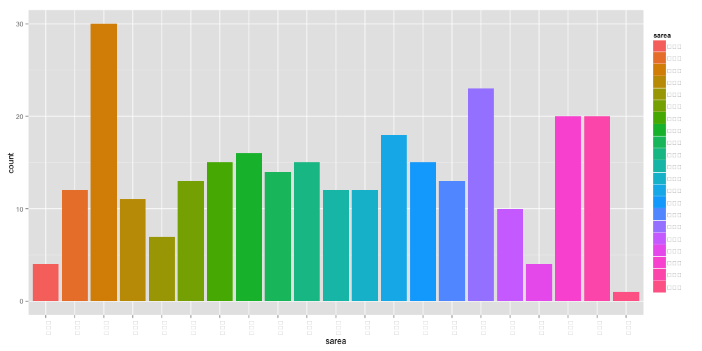
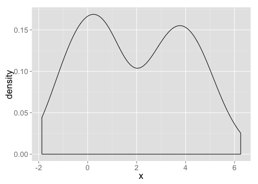
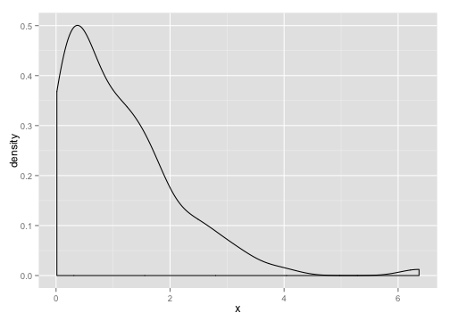
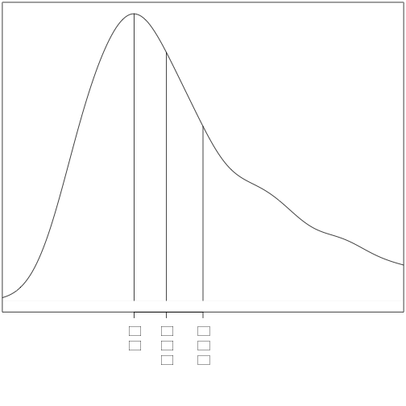
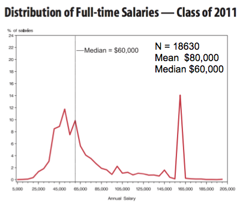
| 房價 | 信義區 | 大安區 | |
|---|---|---|---|
| 1 | 25% | 12.50 | 14.80 |
| 2 | 50% | 18.00 | 23.40 |
| 3 | 平均 | 25.20 | 31.50 |
| 4 | 75% | 25.60 | 37.40 |
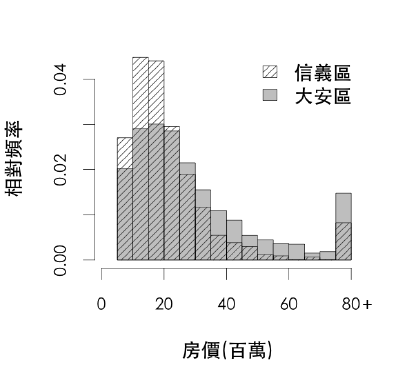
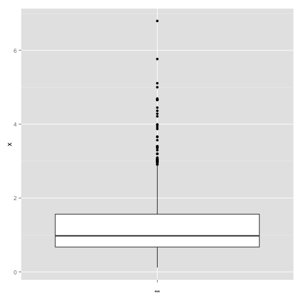
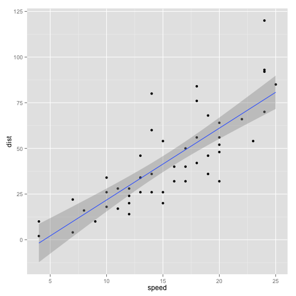
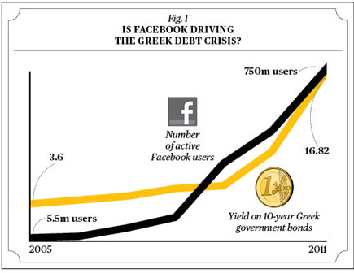
| Survived | Count |
|---|---|
| No | 1490 |
| Yes | 711 |
| "Sex" | "Male" | "Female" | |
| "Survived" | |||
| "No" | 1364 | 126 | |
| "Yes" | 367 | 344 |
| 房價 | 信義區 | 大安區 | |
|---|---|---|---|
| 1 | 25% | 12.50 | 14.80 |
| 2 | 50% | 18.00 | 23.40 |
| 3 | 平均 | 25.20 | 31.50 |
| 4 | 75% | 25.60 | 37.40 |
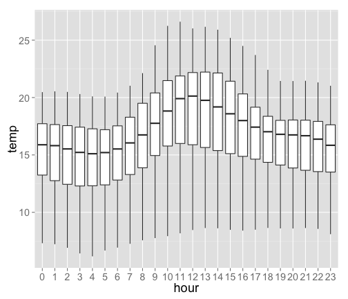
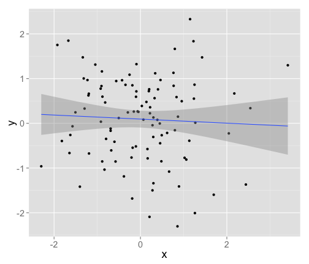
相關係數：-0.0503478
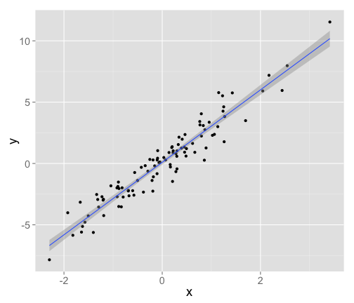
相關係數：0.9565499
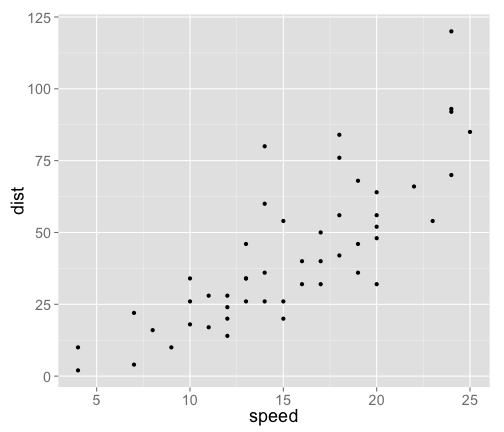

圖片來源： http://myfootpath.com/careers/engineering-careers/statistician-careers/

取自http://www.r-bloggers.com/mapping-the-worlds-biggest-airlines/

取自 http://r4stats.com/2013/03/19/r-2012-growth-exceeds-sas-all-time-total/

http://data.dsp.im/dataset/youbike-and-weather-data-20150331抓取ubike和天氣的資料{kind=link}